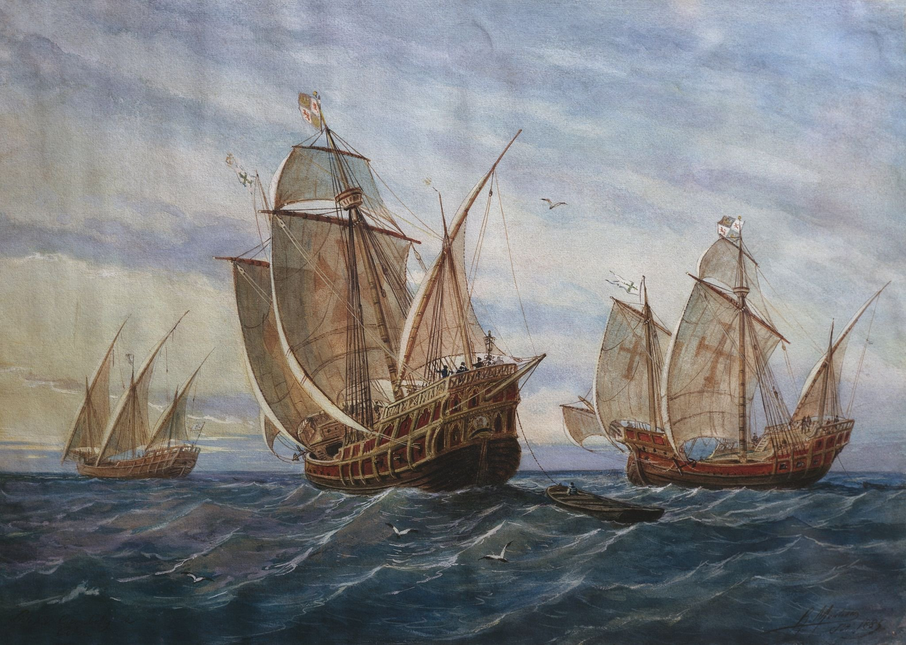

航海历史发展历程
古代航海：远洋探索的开端
明朝郑和七下西洋，船队规模宏大，航程覆盖西太平洋和印度洋，是15世纪世界航海史上的壮举，推动了中外文化与贸易交流。
大航海时代：世界版图的重构
15-17世纪，哥伦布发现美洲、麦哲伦完成环球航行，欧洲航海家的探索打破了各大洲的孤立状态，开启了全球化的序幕。

明朝郑和七下西洋，船队规模宏大，航程覆盖西太平洋和印度洋，是15世纪世界航海史上的壮举，推动了中外文化与贸易交流。
15-17世纪，哥伦布发现美洲、麦哲伦完成环球航行，欧洲航海家的探索打破了各大洲的孤立状态，开启了全球化的序幕。
